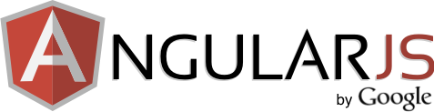

<section id="knowledge-base-angularjs">
    <div class="container">
        <div class="row">
            <div class="col-md-4 order-md-2 mb-4 mb-md-0">

                <div class="card mb-4">
                    <div class="card-body">
                        
                    </div>
                    <div *ngIf="knowledgeBaseAngularJS.links && knowledgeBaseAngularJS.links.length > 0" class="list-group list-group-flush">
                        <a *ngFor="let link of knowledgeBaseAngularJS.links; index as i" class="list-group-item list-group-item-action py-2" [href]="link.url" target="_blank">{{link.title}}</a>
                    </div>
                </div>

                <h5>Guides</h5>
                <div class="list-group" *ngIf="linksArr && linksArr.length > 0">
                    <a *ngFor="let link of linksArr;" class="list-group-item list-group-item-action py-2" [href]="link.url" target="_blank">{{link.title}}</a>
                </div>
                <hr class="mt-4 mb-4" />
                <ul class="">
                    <li><a href="https://git-scm.com/downloads" target="_blank">Download git</a> - You need git to clone the angular-seed repository.</li>
                    <li><a href="https://nodejs.org/" target="_blank">Download node.js</a> - You must have Node.js and its package manager (npm) installed.</li>
                    <li>npm install bootstrap</li>
                    <li>npm install popper.js --save</li>
                    <li>git commit -m 'Some message about the change'</li>
                    <li>git push origin 'branch-name'</li>
                    <li>git clone &lt;former directory&gt;&lt;new directory&gt;</li>
                </ul>
            </div>
            <div class="col-md-8 order-md-1">
                <h1>{{knowledgeBaseAngularJS.title}}</h1>
                <p class="lead font-weight-light">{{knowledgeBaseAngularJS.subTitle}}</p>
                <p>{{knowledgeBaseAngularJS.text}}</p>

                <hr class="mt-4 mb-4" />
                <div class="alert bg-light small border-dark">
                    <i class="fa fa-exclamation-circle mr-2 fa-2x align-middle"></i>Note copying the AngularJS files from node_modules to app/lib makes it easier to serve the files by a web server.
                </div>

                <hr class="mt-4 mb-4" />


                <h2>Create AngularJS Application</h2>{{showAngularJSTab}}
                <ul class="nav nav-tabs" id="angularjs-tabs" role="tablist">
                    <li class="nav-item">
                        <a class="nav-link active">test</a>
                    </li>
                    <li class="nav-item">
                        <a class="nav-link" [class]="{'active': showAngularJSTab=='sarmbrec' ? true : false}" (click)="ShowHideAngularJSTab($event)" routerlink="" data-category="sarmbrec" role="tab" aria-controls="sarmbrec" aria-selected="true">
                            <i class="fa fa-rebel mr-1"></i> My seed app
                        </a>
                    </li>
                    <li class="nav-item">
                        <a class="nav-link" [class]="{'active': showAngularJSTab=='google'}" (click)="ShowHideAngularJSTab($event)" href="" data-category="google" role="tab" aria-controls="google" aria-selected="false">
                            <i class="fa fa-google mr-1"></i> AngularJS seed app
                        </a>
                    </li>
                    <li class="nav-item">
                        <a class="nav-link" [class]="{'active': showAngularJSTab=='cdn'}" (click)="ShowHideAngularJSTab($event)" href="" data-category="cdn" role="tab" aria-controls="cdn" aria-selected="false">
                            <i class="fa fa-server mr-1"></i> Popular CDNs
                        </a>
                    </li>
                    <li class="nav-item">
                        <a class="nav-link" [class]="{'active': showAngularJSTab=='read'}" (click)="ShowHideAngularJSTab($event)" href="" data-category="read" role="tab" aria-controls="read" aria-selected="false">
                            <i class="fa fa-bookmark-o mr-1"></i> Read more
                        </a>
                    </li>
                </ul>
                <!-- 
                <div class="tab-content">
                    <div class="tab-pane p-4" ng-class="{'active': $ctrl.showAngularJSTab=='sarmbrec'}" role="tabpanel" aria-labelledby="sarmbrec">
                        <h6><i class="fa fa-github align-middle text-muted mr-2 fa-2x"></i>AngularJS Seed App</h6>
                        <hr />
                        <p>My quick start AngularJS seed app.</p>
                        <p>
                            <a href="https://github.com/sarmbrec/sarmbrec-angularjs-seed" target="_blank">Download</a> or clone to get started quickly.
                        </p>
                        <hr class="mb-2" />

                        <h3>Clone seed</h3>
                        <code>
                                        git clone https://github.com/sarmbrec/sarmbrec-angularjs-seed.git
                                        <br />
                                        cd sarmbrec-angularjs-seed
                                    </code>


                        <h3>…or push an existing repository from the command line</h3>
                        <code>
                                        git remote add origin https://github.com/sarmbrec/sarmbrec-angularjs-seed.git
                                        <br />
                                        git push -u origin master
                                    </code>


                        <h3>…or create a new repository on the command line</h3>
                        <code>
                                        echo "# sarmbrec-angularjs-seed" >> README.md
                                        <br />
                                        git init
                                        <br />
                                        git add .  //or file name README.md
                                        <br />
                                        git commit -m "first commit"
                                        <br />
                                        git remote add origin https://github.com/sarmbrec/sarmbrec-angularjs-seed.git
                                        <br />
                                        git push -u origin master
                                    </code>


                        <h3>Install Dependencies</h3>
                        <code>
                                        npm install
                                    </code>
                        <h3>Run the Application</h3>
                        <code>
                                        npm start
                                    </code>
                        <p>
                            Now browse to the app at <a href="localhost:8000/index.html" target="_blank">localhost:8000/index.html</a>.
                        </p>
                    </div>
                    <div class="tab-pane p-4" ng-class="{'active': $ctrl.showAngularJSTab=='google'}" role="tabpanel" aria-labelledby="google">
                        <h6><i class="fa fa-github align-middle text-muted mr-2 fa-2x"></i>AngularJS Seed App</h6>
                        <hr />
                        <p>
                            The seed contains a sample AngularJS application and is preconfigured to install the AngularJS framework and a bunch of development and testing tools for instant web development gratification. The seed app doesn't do much, just shows how to wire two controllers
                            and views together.
                        </p>
                        <p>
                            <a href="https://github.com/angular/angular-seed/archive/master.zip">Download</a> or clone the <a href="https://github.com/angular/angular-seed" target="_blank">AngularJS seed app</a> to get started quickly.
                        </p>
                        <hr class="mb-2" />
                        <h3>Clone AngularJS Phonecat App Tutorial</h3>
                        <code>
                                        git clone --depth=16 https://github.com/angular/angular-phonecat.git
                                    </code>
                        <code>
                                        git checkout -f step-14
                                    </code>
                        <h3>Clone AngularJS seed</h3>
                        <code>
                                        git clone --depth=1 https://github.com/angular/angular-seed.git
                                    </code>
                        <h3>Install Dependencies</h3>
                        <code>
                                        npm install
                                    </code>
                        <h3>Run the Application</h3>
                        <code>
                                        npm start
                                    </code>
                        <p>
                            Now browse to the app at <a href="localhost:8000/index.html" target="_blank">localhost:8000/index.html</a>.
                        </p>

                    </div>
                    <div class="tab-pane p-4" ng-class="{'active': $ctrl.showAngularJSTab=='cdn'}" role="tabpanel" aria-labelledby="cdn">
                        <h3>jQuery</h3>
                        <code>
                                        &lt;script src="https://code.jquery.com/jquery-3.2.1.slim.min.js" integrity="sha384-KJ3o2DKtIkvYIK3UENzmM7KCkRr/rE9/Qpg6aAZGJwFDMVNA/GpGFF93hXpG5KkN" crossorigin="anonymous"&gt;&lt;/script&gt;
                                    </code>
                        <h3>Bootstrap 4</h3>
                        <code>
                                        &lt;link rel="stylesheet" href="https://maxcdn.bootstrapcdn.com/bootstrap/4.0.0/css/bootstrap.min.css" integrity="sha384-Gn5384xqQ1aoWXA+058RXPxPg6fy4IWvTNh0E263XmFcJlSAwiGgFAW/dAiS6JXm" crossorigin="anonymous"&gt;
                                    </code>
                        <code>
                                        &lt;script src="https://cdnjs.cloudflare.com/ajax/libs/popper.js/1.12.9/umd/popper.min.js" integrity="sha384-ApNbgh9B+Y1QKtv3Rn7W3mgPxhU9K/ScQsAP7hUibX39j7fakFPskvXusvfa0b4Q" crossorigin="anonymous"&gt;&lt;/script&gt;
                                        <br />
                                        &lt;script src="https://maxcdn.bootstrapcdn.com/bootstrap/4.0.0/js/bootstrap.min.js" integrity="sha384-JZR6Spejh4U02d8jOt6vLEHfe/JQGiRRSQQxSfFWpi1MquVdAyjUar5+76PVCmYl" crossorigin="anonymous"&gt;&lt;/script&gt;
                                    </code>
                    </div>
                    <div class="tab-pane p-4" ng-class="{'active': $ctrl.showAngularJSTab=='read'}" role="tabpanel" aria-labelledby="read">
                        <p><a href="https://docs.angularjs.org/misc/started" target="_blank">https://docs.angularjs.org/misc/started</a></p>
                        <p>
                            The AngularJS documentation includes the
                            <a href="https://docs.angularjs.org/guide/index" target="_blank">Developer Guide</a> covering concepts and the <a href="https://docs.angularjs.org/api" target="_blank">API Reference</a> for syntax and usage.
                        </p>
                        <ol>
                            <li>
                                <a href="https://docs.angularjs.org/guide/concepts" target="_blank">Read the conceptual overview</a>.
                                <br /> Understand AngularJS's vocabulary and how all the AngularJS components work together.
                            </li>
                            <li>
                                Do the <a href="https://docs.angularjs.org/tutorial/" target="_blank">AngularJS Tutorial</a>.
                                <br /> Walk end-to-end through building an application complete with tests on top of a node.js web server. Covers every major AngularJS feature and shows you how to set up your development environment.
                            </li>
                            <li>
                                Download or clone the <a href="https://github.com/angular/angular-seed" target="_blank">Seed App project template</a>.
                                <br /> Gives you a starter app with a directory layout, test harness, and scripts to begin building your application.
                            </li>
                        </ol>
                        <ol>
                            <li><a href="http://www.youtube.com/watch?v=WuiHuZq_cg4&list=PL173F1A311439C05D&context=C48ac877ADvjVQa1PpcFONnl4Q5x8hqvT6tRBTE-m0-Ym47jO3PEE%3D" target="_blank">Introduction to AngularJS</a></li>
                            <li><a href="http://www.youtube.com/watch?v=Yg-R1gchccg&list=PL173F1A311439C05D&context=C48ac877ADvjVQa1PpcFONnl4Q5x8hqvT6tRBTE-m0-Ym47jO3PEE%3D" target="_blank">Creating Directives</a></li>
                            <li><a href="http://www.youtube.com/watch?v=IRelx4-ISbs&list=PL173F1A311439C05D&context=C48ac877ADvjVQa1PpcFONnl4Q5x8hqvT6tRBTE-m0-Ym47jO3PEE%3D" target="_blank">Communicating with Servers</a></li>
                            <li><a href="http://www.youtube.com/user/angularjs" target="_blank">YouTube channel</a> for more AngularJS video presentations and tutorials.</li>
                        </ol>
                    </div>
                </div>
 -->
            </div>
        </div>
    </div>
</section>